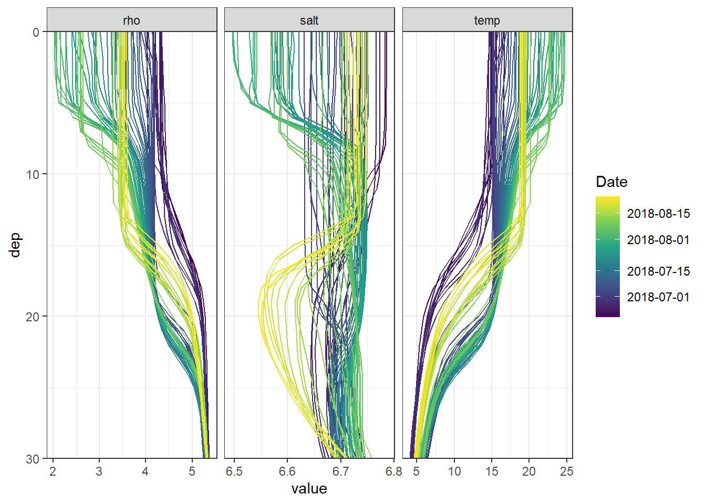

Finnmaid and GETM
Jens Daniel Müller und Lara Sophie Burchardt
24 March, 2020
Last updated: 2020-03-24
Checks: 7 0
Knit directory: BloomSail/
This reproducible R Markdown analysis was created with workflowr (version 1.6.0). The Checks tab describes the reproducibility checks that were applied when the results were created. The Past versions tab lists the development history.
Great! Since the R Markdown file has been committed to the Git repository, you know the exact version of the code that produced these results.
Great job! The global environment was empty. Objects defined in the global environment can affect the analysis in your R Markdown file in unknown ways. For reproduciblity it’s best to always run the code in an empty environment.
The command set.seed(20191021) was run prior to running the code in the R Markdown file. Setting a seed ensures that any results that rely on randomness, e.g. subsampling or permutations, are reproducible.
Great job! Recording the operating system, R version, and package versions is critical for reproducibility.
Nice! There were no cached chunks for this analysis, so you can be confident that you successfully produced the results during this run.
Great job! Using relative paths to the files within your workflowr project makes it easier to run your code on other machines.
Great! You are using Git for version control. Tracking code development and connecting the code version to the results is critical for reproducibility. The version displayed above was the version of the Git repository at the time these results were generated.
Note that you need to be careful to ensure that all relevant files for the analysis have been committed to Git prior to generating the results (you can use wflow_publish or wflow_git_commit). workflowr only checks the R Markdown file, but you know if there are other scripts or data files that it depends on. Below is the status of the Git repository when the results were generated:
Ignored files:
Ignored: .Rhistory
Ignored: .Rproj.user/
Ignored: data/Finnmaid_2018/
Ignored: data/GETM/
Ignored: data/Maps/
Ignored: data/Ostergarnsholm/
Ignored: data/TinaV/
Ignored: data/_merged_data_files/
Ignored: data/_summarized_data_files/
Note that any generated files, e.g. HTML, png, CSS, etc., are not included in this status report because it is ok for generated content to have uncommitted changes.
There are no past versions. Publish this analysis with wflow_publish() to start tracking its development.
library(tidyverse)
library(ncdf4)
library(vroom)
library(lubridate)
library(here)
library(seacarb)
library(oce)
library(patchwork)
library(zoo)# route
select_route <- "E"
# latitude limits
low_lat <- 57.3
high_lat <- 57.5
#depth range to subset GETM 3d files
d1_shallow <- 0
d1_deep <- 30
# date limits
start_date <- "2018-06-20"
end_date <- "2018-08-25"
fixed_values <-
read_csv(here::here("Data/_summarized_data_files", "BloomSail_fixed_values.csv"))1 GETM Data preparation
1.1 Salinity and temperature profiles
Mean salinity and temperature profiles within the BloomSail area were extracted from daily GETM transects beneath the Finnmaid track.
nc <- nc_open(here::here("data/GETM", "Finnmaid.E.3d.2018.nc"))
lat <- ncvar_get(nc, "latc")
time_units <- nc$dim$time$units %>% #we read the time unit from the netcdf file to calibrate the time
substr(start = 15, stop = 33) %>% #calculation, we take the relevant information from the string
ymd_hms() # and transform it to the right format
t <- time_units + ncvar_get(nc, "time") # read time vector
rm(time_units)
d <- ncvar_get(nc, "zax") # read depths vector
for (var_3d in c("salt", "temp")) {
array <- ncvar_get(nc, var_3d) # store the data in a 3-dimensional array
#dim(array) # should be 3d with dimensions: 544 coordinates, 51 depths, and number of days of month
fillvalue <- ncatt_get(nc, var_3d, "_FillValue")
# Working with the data
array[array == fillvalue$value] <- NA
for (i in seq(1,length(t),1)){
# i <- 3
array_slice <- array[, , i] # slices data from one day
array_slice_df <- as.data.frame(t(array_slice))
array_slice_df <- as_tibble(array_slice_df)
gt_3d_part <- array_slice_df %>%
set_names(as.character(lat)) %>%
mutate(dep = -d) %>%
gather("lat", "value", 1:length(lat)) %>%
mutate(lat = as.numeric(lat)) %>%
filter(lat > low_lat, lat < high_lat,
dep >= d1_shallow, dep <= d1_deep) %>%
#summarise_all("mean") %>%
mutate(var = var_3d,
date_time=t[i]) %>%
dplyr::select(date_time, dep, value, var) #%>%
#filter(date_time >= start_date, date_time <= end_date)
if (exists("gt_3d")) {
gt_3d <- bind_rows(gt_3d, gt_3d_part)
} else {gt_3d <- gt_3d_part}
rm(array_slice, array_slice_df, gt_3d_part)
}
rm(array, fillvalue)
}
nc_close(nc)
rm(nc)
gt_3d_jun_aug <- gt_3d %>%
filter(date_time >= start_date & date_time <= end_date) %>%
group_by(dep,var,date_time ) %>%
summarise_all(list(value=~mean(.,na.rm=TRUE))) %>%
ungroup()
gt_3d_jun_aug %>%
vroom_write((here::here("data/_summarized_data_files", file = "gt_3d_jun_aug_2018.csv")))
rm(gt_3d, gt_3d_jun_aug, d1_deep, d1_shallow, i, lat, d, t, var_3d)1.2 Mixed layer depth
Regional mean mixed layer depth estimates based on sewater density and windspeed within the BloomSail area were extracted from 3h GETM surface data along the Finnmaid track.
nc_2d <- nc_open(here("data/GETM", "Finnmaid.E.2d.2018.nc"))
#print(nc_2d)
lat <- ncvar_get(nc_2d, "latc")
time_units <- nc_2d$dim$time$units %>% #we read the time unit from the netcdf file to calibrate the time
substr(start = 15, stop = 33) %>% #calculation, we take the relevant information from the string
ymd_hms() # and transform it to the right format
t <- time_units + ncvar_get(nc_2d, "time") # read time vector
rm(time_units)
for (var in names(nc_2d$var)[c(3,4,6:12)]) {
#var <- "mld_rho"
array <- ncvar_get(nc_2d, var) # store the data in a 3-dimensional array
fillvalue <- ncatt_get(nc_2d, var, "_FillValue")
array[array == fillvalue$value] <- NA
array <- as.data.frame(t(array), xy=TRUE)
array <- as_tibble(array)
gt_2d_part <- array %>%
set_names(as.character(lat)) %>%
mutate(date_time = t) %>%
filter(date_time >= start_date & date_time <= end_date) %>%
gather("lat", "value", 1:length(lat)) %>%
mutate(lat = as.numeric(lat)) %>%
filter(lat > low_lat, lat<high_lat) %>%
select(-lat) %>%
group_by(date_time) %>%
summarise_all(list(value=~mean(.,na.rm=TRUE))) %>%
ungroup() %>%
mutate(var = var)
if (exists("gt_2d")) {
gt_2d <- bind_rows(gt_2d, gt_2d_part)
} else {gt_2d <- gt_2d_part}
rm(array, fillvalue, gt_2d_part)
}
nc_close(nc_2d)
rm(nc_2d)
gt_2d <- gt_2d %>%
mutate(value = round(value, 3)) %>%
pivot_wider(values_from = value, names_from = var) %>%
mutate(U_10 = round(sqrt(u10^2 + v10^2), 3)) %>%
select(-c(u10, v10))
gt_2d %>%
vroom_write((here::here("data/_summarized_data_files", file = "gt_2d_jun_aug_2018.csv")))
rm(t, var, gt_2d, lat)2 Hydrography
2.1 Read summary files
gt_3d_jun_aug <-
read_tsv((here::here("data/_summarized_data_files", file = "gt_3d_jun_aug_2018.csv")))
gt_2d_jun_aug <-
read_tsv((here::here("data/_summarized_data_files", file = "gt_2d_jun_aug_2018.csv")))
gt_3d_jun_aug <- gt_3d_jun_aug %>%
pivot_wider(values_from = value, names_from = var) %>%
mutate(rho = swSigma(salinity = salt, temperature = temp, pressure = dep/10))
gt_2d_jun_aug_daily <- gt_2d_jun_aug %>%
mutate(day = yday(date_time)) %>%
group_by(day) %>%
summarise_all(list(~mean(.,na.rm=TRUE))) %>%
ungroup() %>%
select(-day)2.2 Hovmoeller Plots
p_sal <- gt_3d_jun_aug %>%
ggplot()+
geom_raster(aes(date_time, dep, fill=salt))+
geom_vline(data=fixed_values, aes(xintercept = start))+
geom_vline(data=fixed_values, aes(xintercept = end))+
scale_fill_viridis_c(name="Salinity ", direction = -1)+
scale_y_reverse()+
coord_cartesian(expand = 0)+
labs(y="Depth [m]")+
theme_bw()+
theme(axis.title.x = element_blank(),
axis.text.x = element_blank())+
geom_line(data= gt_2d_jun_aug_daily,
aes(x = date_time, y = mld_rho), color = "white")+
scale_color_discrete(name = "Legend", labels = c("MLD Rho"))
p_tem <- gt_3d_jun_aug %>%
ggplot()+
geom_raster(aes(date_time, dep, fill=temp))+
geom_vline(data=fixed_values, aes(xintercept = start))+
geom_vline(data=fixed_values, aes(xintercept = end))+
scale_fill_viridis_c(name="Temperature (°C)", option = "B")+
scale_y_reverse()+
coord_cartesian(expand = 0)+
labs(y="Depth [m]", x="")+
theme_bw()+
theme(axis.title.x = element_blank(),
axis.text.x = element_blank())+
geom_line(data= gt_2d_jun_aug_daily,
aes(x = date_time, y = mld_rho), color = "white")+
scale_color_discrete(name = "Legend", labels = c("MLD Rho"))
p_rho <- gt_3d_jun_aug %>%
ggplot()+
geom_raster(aes(date_time, dep, fill=rho))+
geom_vline(data=fixed_values, aes(xintercept = start))+
geom_vline(data=fixed_values, aes(xintercept = end))+
scale_fill_viridis_c(name="d Rho (kg/m^3)", direction = -1)+
scale_y_reverse()+
coord_cartesian(expand = 0)+
labs(y="Depth [m]", x="")+
theme_bw()+
theme(axis.title.x = element_blank())+
geom_line(data= gt_2d_jun_aug_daily,
aes(x = date_time, y = mld_rho), color = "white")+
scale_color_discrete(name = "Legend", labels = c("MLD Rho"))
p_sal / p_tem / p_rho
rm(p_sal, p_tem, p_rho)2.3 Profiles
gt_3d_jun_aug_long <- gt_3d_jun_aug %>%
pivot_longer(3:5, values_to = "value", names_to = "parameter")
#
lab_dates <- pretty(gt_3d_jun_aug_long$date_time)
gt_3d_jun_aug_long %>%
ggplot(aes(value, dep,
col=as.numeric(date_time),
group=as.factor(date_time)))+
geom_path()+
scale_y_reverse(expand = c(0,0))+
scale_color_viridis_c(breaks = as.numeric(lab_dates),
labels = lab_dates,
name="Date")+
theme_bw()+
facet_grid(~parameter, scales = "free_x")
3 Metrology
3.1 Windspeeds
gt_2d_jun_aug %>%
ggplot()+
geom_rect(data = fixed_values, aes(xmin=start, xmax=end, ymin=-Inf, ymax=Inf), alpha=0.2)+
geom_line(aes(x= date_time, y = U_10, col="3-hourly"))+
geom_line(data = gt_2d_jun_aug_daily,
aes(x= date_time, y = U_10, col="Daily mean"))+
labs(y="U (m/s)", x = "Date")+
scale_color_brewer(palette = "Set1", name="", direction = -1)+
theme_bw()
4 Finnmaid
4.1 Read data
Finnmaid data, including reconstructed data during LICOS operation failure.
df <-
read_csv(here::here("Data/_summarized_data_files",
"Finnmaid.csv"))
df <- df %>%
filter(Area == "BS",
date > start_date,
date < end_date) %>%
select(-c(Lon, Lat, patm, Teq, xCO2, route, Area)) %>%
mutate(ID = as.factor(ID)) %>%
rename(tem=Tem,
sal=Sal)4.2 CT calculation
Calculate based on fixed AT and salinity mean values.
df <- df %>%
mutate(CT = carb(24, var1=pCO2, var2=1720*1e-6,
S=6.9, T=tem, k1k2="m10", kf="dg", ks="d",
gas="insitu")[,16]*1e6)4.3 Timeseries
FM_ts_mean <- df %>%
arrange(date) %>%
group_by(ID, sensor) %>%
summarise_all(list(~mean(.)), na.rm=TRUE) %>%
ungroup() %>%
pivot_longer(4:8, values_to = "mean", names_to = "parameter")
FM_ts_sd <- df %>%
arrange(date) %>%
group_by(ID, sensor) %>%
summarise_all(list(~sd(.)), na.rm=TRUE) %>%
ungroup() %>%
pivot_longer(4:8, values_to = "sd", names_to = "parameter") %>%
select(-date)
FM_ts <- inner_join(FM_ts_mean, FM_ts_sd)
rm(FM_ts_mean, FM_ts_sd)FM_ts %>%
ggplot()+
geom_rect(data = fixed_values, aes(xmin=start, xmax=end, ymin=-Inf, ymax=Inf), alpha=0.2)+
geom_path(aes(x=date, y=mean, ymax=mean+sd, ymin=mean-sd))+
geom_ribbon(aes(x=date, y=mean, ymax=mean+sd, ymin=mean-sd), alpha=0.5)+
geom_point(aes(x=date, y=mean, ymax=mean+sd, ymin=mean-sd, col=sensor))+
facet_grid(parameter~., scales = "free_y")+
scale_color_brewer(palette = "Set1", direction=-1)+
theme_bw()
5 CT vs temperature
5.1 SST time series
FM_ts %>%
filter(parameter == "tem") %>%
ggplot()+
geom_rect(data = fixed_values, aes(xmin=start, xmax=end, ymin=-Inf, ymax=Inf), alpha=0.2)+
geom_path(aes(x=date, y=mean, ymax=mean+sd, ymin=mean-sd))+
geom_ribbon(aes(x=date, y=mean, ymax=mean+sd, ymin=mean-sd), alpha=0.5)+
geom_point(aes(x=date, y=mean, col="Finnmaid"))+
geom_path(data = gt_2d_jun_aug, aes(x=date_time, y=SST, col="GETM, 3h"))+
geom_path(data = gt_2d_jun_aug_daily, aes(x=date_time, y=SST, col="GETM, daily"))+
scale_color_brewer(palette = "Set1", name="")+
labs(x="", y="SST (°C)")+
theme_bw()
5.2 dCT vs dSST
As primary production (negative changes in CT) and increase in seawater temperature have a common driver (light), the relation between both changes was investigated.
The following analysis is restricted to the BloomSail period.
CT_tem <- FM_ts %>%
filter(date > fixed_values$start,
date < fixed_values$end) %>%
filter(parameter %in% c("tem", "CT")) %>%
select(date, parameter, mean) %>%
pivot_wider(values_from = mean, names_from = parameter) %>%
set_names(c("date_time", "FM", "CT"))
CT_tem <- full_join(CT_tem,
gt_2d_jun_aug_daily %>% select(date_time, gt = SST))
CT_tem <- CT_tem %>%
arrange(date_time) %>%
mutate(gt = na.approx(gt)) %>%
drop_na()
CT_tem <- CT_tem %>%
pivot_longer(cols = c(FM, gt), values_to = "SST", names_to = "obs")
CT_tem <- CT_tem %>%
group_by(obs) %>%
arrange(date_time) %>%
mutate(dCT = CT - lag(CT),
dSST = SST - lag(SST),
sign = if_else(dCT < 0, "neg", "pos")) %>%
ungroup()
lab_dates <- pretty(CT_tem$date_time)
CT_tem %>%
ggplot()+
geom_hline(yintercept = 0)+
geom_vline(xintercept = 0)+
geom_smooth(aes(dSST, dCT), method = "lm", se=FALSE)+
geom_point(aes(dSST, dCT, fill=as.numeric(date_time)), shape=21)+
scale_fill_viridis_c(breaks = as.numeric(lab_dates),
labels = lab_dates,
name="Date")+
guides(fill = guide_legend(override.aes=list(shape=21)))+
facet_wrap(~obs)
6 NCP
6.1 MLD approach
Use dCT/dtem from Finnmaid, MLD from GETM
NCP_MLD <- FM_ts %>%
filter(date > fixed_values$start,
date < fixed_values$end) %>%
filter(parameter %in% c("tem", "CT")) %>%
select(date, parameter, mean) %>%
pivot_wider(values_from = mean, names_from = parameter) %>%
set_names(c("date_time", "SST", "CT"))
NCP_MLD <- full_join(NCP_MLD,
gt_2d_jun_aug_daily %>% select(-c(SSS, SST, U_10)))
NCP_MLD <- NCP_MLD %>%
pivot_longer(cols = 4:8, values_to = "MLD", names_to = "Parameter") %>%
arrange(date_time) %>%
group_by(Parameter) %>%
mutate(MLD = na.approx(MLD)) %>%
ungroup()
NCP_MLD %>%
ggplot()+
geom_rect(data = fixed_values, aes(xmin=start, xmax=end, ymin=-Inf, ymax=Inf), alpha=0.2)+
geom_line(aes(date_time, MLD, col=Parameter))+
geom_point(data = NCP_MLD %>% drop_na, aes(date_time, MLD, col=Parameter))+
scale_color_brewer(palette = "Set1")+
labs(x="", y="MLD (m)")+
theme_bw()
NCP_MLD <- NCP_MLD %>%
drop_na() %>%
group_by(Parameter) %>%
arrange(date_time) %>%
mutate(dCT = CT - lag(CT),
dSST = SST - lag(SST),
dNCP = dCT * MLD / 1000,
NCP_cum = cumsum(replace_na(dNCP, 0))) %>%
ungroup()6.2 Incremental and cumulative timeseries
Total incremental and cumulative CT changes inbetween cruise dates were calculated.
p_iNCP <- NCP_MLD %>%
ggplot(aes(date_time, dNCP, fill= Parameter))+
geom_hline(yintercept = 0)+
geom_col(col="black", position = "dodge")+
scale_y_continuous(breaks = seq(-100, 100, 0.2))+
labs(y="integrated, directional CT changes [mol/m2]", x="date")
p_iNCPcum <- NCP_MLD %>%
ggplot(aes(date_time, NCP_cum,
fill= Parameter))+
geom_area(position = "identity", col="black")+
geom_hline(yintercept = 0)+
scale_fill_viridis_d()+
scale_y_continuous(breaks = seq(-100, 100, 0.2))+
facet_grid(Parameter~., scales = "free_y", space = "free_y")+
theme(strip.background = element_blank(),
strip.text = element_blank())+
labs(y="integrated, cumulative, directional CT changes [mol/m2]", x="date")
(p_iNCP / p_iNCPcum)+
plot_layout(guides = 'collect', heights = c(1, 2))
rm(p_iNCP, p_iNCPcum)6.3 delta T appraoch
Use dCT/dtem from Finnmaid/GETM, T-profiles from GETM
sessionInfo()R version 3.5.0 (2018-04-23)
Platform: x86_64-w64-mingw32/x64 (64-bit)
Running under: Windows 10 x64 (build 18363)
Matrix products: default
locale:
[1] LC_COLLATE=English_United States.1252
[2] LC_CTYPE=English_United States.1252
[3] LC_MONETARY=English_United States.1252
[4] LC_NUMERIC=C
[5] LC_TIME=English_United States.1252
attached base packages:
[1] stats graphics grDevices utils datasets methods base
other attached packages:
[1] zoo_1.8-6 patchwork_1.0.0 seacarb_3.2.12 oce_1.2-0
[5] gsw_1.0-5 testthat_2.3.1 here_0.1 lubridate_1.7.4
[9] vroom_1.2.0 ncdf4_1.17 forcats_0.4.0 stringr_1.4.0
[13] dplyr_0.8.3 purrr_0.3.3 readr_1.3.1 tidyr_1.0.0
[17] tibble_2.1.3 ggplot2_3.3.0 tidyverse_1.3.0
loaded via a namespace (and not attached):
[1] Rcpp_1.0.2 lattice_0.20-35 assertthat_0.2.1 zeallot_0.1.0
[5] rprojroot_1.3-2 digest_0.6.22 R6_2.4.0 cellranger_1.1.0
[9] backports_1.1.5 reprex_0.3.0 evaluate_0.14 httr_1.4.1
[13] pillar_1.4.2 rlang_0.4.5 readxl_1.3.1 rstudioapi_0.10
[17] Matrix_1.2-14 rmarkdown_2.0 labeling_0.3 bit_1.1-14
[21] munsell_0.5.0 broom_0.5.3 compiler_3.5.0 httpuv_1.5.2
[25] modelr_0.1.5 xfun_0.10 pkgconfig_2.0.3 mgcv_1.8-23
[29] htmltools_0.4.0 tidyselect_0.2.5 workflowr_1.6.0 viridisLite_0.3.0
[33] crayon_1.3.4 dbplyr_1.4.2 withr_2.1.2 later_1.0.0
[37] grid_3.5.0 nlme_3.1-137 jsonlite_1.6 gtable_0.3.0
[41] lifecycle_0.1.0 DBI_1.0.0 git2r_0.26.1 magrittr_1.5
[45] scales_1.0.0 cli_1.1.0 stringi_1.4.3 fs_1.3.1
[49] promises_1.1.0 xml2_1.2.2 ellipsis_0.3.0 generics_0.0.2
[53] vctrs_0.2.0 RColorBrewer_1.1-2 tools_3.5.0 bit64_0.9-7
[57] glue_1.3.1 hms_0.5.2 yaml_2.2.0 colorspace_1.4-1
[61] rvest_0.3.5 knitr_1.26 haven_2.2.0